a yurt in the campgrounds
Faery Yurt
Helen’s candlelit yurt on Stimpunks.World, pitched at the edge of the woods. Lots of books, music, Faeries, candle light and weird thoughts and happenings.....
This is my yurt, pitched at the edge of the woods in the campgrounds of Stimpunks.World, with a stream tracing the trees; follow the fairy lights from the treeline and you will find it. It is always night here, the good kind of night, candles lit along the shelves and fairy lights strung low across the canvas so the whole room glows amber instead of going properly dark.
The sofas are too soft to sit in properly (you sink, and then you stay), the beanbags were claimed by a hamster some time ago, and the ivy worked its way in through the window frame years back and was never asked to leave. The flap of the door is always open. Come in, take your shoes off, and stay as long as you need to.
Like More Realms, the looser, weirder realm beyond Autistic Realms, this is not a place of conclusions or answers. It is a place to wander, to feel, to think sideways, and to deep dive monotropically into other ways of experiencing the world. There is no map, but there are threads, glimmers, and soft, weird spaces to explore…
HOW LOUD DO YOU WANT IT?
Starts wherever your device says. In here MAX lights the fairy lights and turns the record, and makes the stars sparkle behind any portal door you open and the amber and amethyst glow in the Alchemist’s Arch; nothing else in the yurt moves unless you ask it to, below.
Faeries drifting across the page, and ivy and mushrooms growing very slowly round its edges. Each stays still until you press it, whatever the dial says, and pressing again clears it. Nothing flashes, and nothing is remembered: next time both are off.
The Soundtrack
The sound of this room is a yarn of songs I keep coming back to, spun into two playlists. They play in the Music Room, through the door below, from the top until you stop them or one record at a time; in here the songbook under the phonograph lists every song on them, for looking through. Nothing plays before you press, and nothing plays on this page.
-
Faery Yurt’s Yarn
- Pink Floyd The Dark Side of the Moon the 50th anniversary remaster, the whole album 42:56
- Ezra Furman Goodbye Small Head the whole album 42:27
- Khruangbin & Leon Bridges Texas Moon the whole EP 22:40
- Andrew Sa Under You live at WFUV 3:29
- Noah Reid Simply the Best the Schitt’s Creek single 2:44
- Chaparelle Dance With Somebody 3:33
- The Orb Little Fluffy Clouds 4:01
-
Faery Yurt’s Yarn
- AURORA Running With The Wolves 3:38
- AURORA The Silent Twins the lyric video 4:38
- AURORA The Conflict Of The Mind 4:13
- AURORA Runaway 4:10
- AURORA The Weight of Missing the visualiser 6:48
- AURORA Dreams with Nicole Zignago, the visualiser 4:26
- Kate Bush Hounds of Love the whole album, a reissue remaster 1:13:15
-
Faery Yurt’s Yarn
- Tracy Chapman Greatest Hits Full Album a collection put together by the channel, under its own title 1:14:36
- David Bowie The Rise and Fall of Ziggy Stardust and the Spiders from Mars the whole album 38:37
- David Bowie Space Oddity the whole album 45:59
- David Bowie Heroes the whole album, 1977 40:40
- Guillemots Through the Windowpane 3:38
- Pink Floyd Wish You Were Here from Pulse, restored and re-edited 6:09
- Enigma Best Collection 2026 nearly seven hours put together by the channel, under its own title 6:52:03
-
Faery Yurt’s Yarn
- Portishead Portishead 0:15
- Portishead Portishead the whole album 52:22
- Portishead Sour Times 4:14
- Portishead Roads live from the Roseland Ballroom, New York 5:12
- Portishead Glory Box 3:32
- Lana Del Rey Top Songs Collection a collection put together by the channel, under its own title 23:19
- Paramore Decode 4:14
-
Faery Yurt’s Yarn
- Paramore Last Hope 5:10
- Nirvana Greatest Hits Songs Collection a collection put together by the channel, under its own title 1:05:30
- Billie Eilish a collection of her songs put together by the channel, which gave it a sentence for a title rather than a name 25:10
- Billie Eilish when the party’s over live in Toronto, 2024 5:32
- Evanescence Bring Me To Life with Paul McCoy 4:14
- Evanescence Going Under 3:38
- The Killers Somebody Told Me 3:22
-
Faery Yurt’s Yarn
- The Killers Human 4:19
- The Killers Read My Mind 4:13
- The Killers All These Things That I’ve Done 4:41
- The Killers Runaways 4:04
- The Killers When You Were Young live from the Royal Albert Hall 4:49
- The Killers Mr. Brightside live from the Royal Albert Hall, 2009 6:13
- The Killers Smile Like You Mean It 3:56
-
Faery Yurt’s Yarn
- Leonard Cohen Greatest Hits Full Album a collection put together by the channel, under its own title 1:52:21
- Kings of Leon Sex on Fire 3:27
- Kings of Leon Use Somebody 3:51
- Kings of Leon My Whole World 4:21
- Kings of Leon Closer 4:00
- R.E.M. Automatic for the People the whole album 48:52
- Red Hot Chili Peppers Californication the whole album 55:19
-
Strange things will happen
- The Radio Dept. Strange Things Will Happen 4:28
- Sylvia Plath & Joy Division The Applicant 2:17
- Kate Bush Cloudbusting 5:09
- Pixies Where Is My Mind? the lyric video 3:50
- Kate Bush Running Up That Hill 4:56
- Depeche Mode Enjoy the Silence 4:40
- Gary Jules Mad World 3:10
-
Strange things will happen
- The Radio Dept. Never Follow Suit the promo video 4:13
- The Cranberries Dreams 4:13
- Massive Attack Inertia Creeps live in Montreal, 1998 6:04
- Portishead Wandering Star 4:16
- Billie Eilish Six Feet Under a lyric video 3:08
- Portishead Glory Box remastered 5:07
- FKA twigs cellophane live at the Wallace Collection 3:57
-
Strange things will happen
- Cocteau Twins & Harold Budd Sea Swallow Me 3:17
- Big Thief Velvet Ring the official audio 2:36
- betram songs like velvet ring by big thief a mix put together by the channel, under its own title 26:31
-
Symphrenia Chill
- Zbigniew Preisner Nostalgia 2:16
- Zbigniew Preisner When a Man Loves a Woman the name of the film, which is the only title the upload gives 7:23
- Zbigniew Preisner L’Aurore (Dawn) 4:19
- Zbigniew Preisner The best of Zbigniew Preisner a concert of his music, under the channel’s own title 51:53
- Brian Eno Lightness: Music for the Marble Palace the whole installation album 55:40
- Philip Glass Music With Changing Parts the whole album 1:01:40
- Erik Satie Gymnopédies 1, 2, 3 an hour of them, as the upload has it 1:05:29
Every song on Faery Yurt’s Yarn and Strange things will happen and Symphrenia Chill, my own playlists on YouTube, read off them on 2026-10-25, each in its own order, a book each. Press a line and it takes you to that record in the Music Room, which is where the music plays, whole or one record at a time. A song I add plays there straight away, and turns up in this book the next time somebody reads the playlist again.

The Bookshelf
The books that live behind my desk outgrew this page, so they have a room of their own now, through the door below: every one I keep, on shelves of its own, with a fire, a sofa and two chairs.
-
Library Music
- Franz Gordon The French Library 3:00
- Toshifumi Hinata Reflections 2:35
- Johannes Bornlöf Nocturnal Waltz 2:09
- Lama House By the Border 2:39
- your movie soundtrack Where Is My Mind a piano version 2:36
- Franz Gordon Airy Fairy Heart 3:30
- Dunja Musarova Ephemeralist 2:28
-
Library Music
- Ludovico Einaudi Nuvole Bianche the visualiser 6:02
- Lucas King Ghost Lullaby piano 3:44
- Chopin Nocturne Op. 9 No. 2 4:29
- Chopin Nocturne in E flat major, Op. 9 No. 2 4:56
- Yonder Dale Eternal Slumber 2:36
- Ludovico Einaudi & Daniel Hope Experience 5:13
- Yann Tiersen Comptine d’un autre été : l’après-midi 2:26
-
Library Music
- Ludovico Einaudi Burning 5:00
- Michael Nyman The Heart Asks Pleasure First / The Promise the edit 3:12
- Michael Nyman The Promise 4:16
- Ludovico Einaudi Luminous the visualiser 4:44
What is on the gramophone through there: every record on Library Music, my own playlist on YouTube, read off it on 2026-10-25 in its own order. Press a line and it takes you to that record on the shelf in the Reading Room, which is where it plays, whole or one record at a time.
The Cinema
The films I keep have a room of their own, through the door below: a little picture palace with velvet curtains and a silver screen, and every film on an old-fashioned reel on the wall, ready to go up when you press it.
-
Philosophy
- Deleuze Philosophy Deleuze Philosophy runs until you stop it
- Where to Start With Deleuze Quarantine Collective runs until you stop it
- Episode 128 ... Deleuze pt. 4 - Flows Philosophize This! 22:54
- Deleuze and Spinoza: Practical Philosophy and Process Ontology Epoch Philosophy 23:38
- Acid Horizon Acid Horizon runs until you stop it
- About Deleuze DISPUK runs until you stop it
- Introduction to Deleuze: Difference and Repetition Then & Now 16:34
-
Philosophy
- What is the Body Without Organs? | Gilles Deleuze and Félix Guattari | Keyword Theory & Philosophy 25:09
- Buddies Without Organs Buddies Without Organs runs until you stop it
- Deleuze for the Desperate #4: body-without-organs Dave Harris 44:39
- Our Bodies, Bodies of Water: A Call to Responsibility with Astrida Neimanis | Wisdoms of Water advaya 3:57
- Philosophy Tube Philosophy Tube runs until you stop it
- Bergson Absurd Being runs until you stop it
- Bergson's Elan Vital and Vitalism Michael Sugrue 45:15
-
Philosophy
- Time and Consciousness: An Introduction to Bergson's Metaphysics | Victoria Trumbull Victoria Trumbull 50:23
- Einstein and Bergson on Time Chicago Humanities 50:37
- The Philosophy of Comedy | Henri Bergson Jonas Čeika - CCK Philosophy 26:53
- Merleau-Ponty - Phenomenology of Perception Absurd Being runs until you stop it
- Merleau-Ponty, The Phenomenology of Perception Overthink Podcast 12:38
- Merleau-Ponty, Phenomenology of Perception, 1: What is Phenomenology? John Russon 1:19:32
- Hubert Dreyfus discusses Heidegger & Merleau-Ponty Tao Ruspoli 22:24
-
Philosophy
- Mark Fisher : The Slow Cancellation Of The Future MaMa Zagreb 46:14
- Mark Fisher - The Demonstration of Capitalist Realism Artists Space 57:46
- Kodwo Eshun: Mark Fisher Memorial Lecture Department of Visual Cultures, Goldsmiths 55:16
- Postcapitalist Desire: The Final Lectures of Mark Fisher Acid Horizon 40:46
- Mark Fisher: Capitalist Realism and Business Ontology Epoch Philosophy 27:58
- Ghosts of Mark Fisher: Hauntology, Lost Futures, and Depression Epoch Philosophy 22:20
- Philosophy of psychiatry webinar : Robert Chapman talk abcphilo 37:37
-
Philosophy
- The Rise of Anti-Capitalist Neurodiversity: Robert Chapman's 'Empire of Normality' Acid Horizon 1:00:36
- ROBERT CHAPMAN Salvatore Marzolo runs until you stop it
- Robert Chapman - Neurodiversity and the pathology paradigm Blavatnik School of Government 56:22
- Robert Chapman - Marx, Alienation and Mental Health Blavatnik School of Government 51:39
- ADAPT OR REMAKE: WHAT IF IT’S THE SYSTEM, NOT YOU? Lighthouse Bookshop 1:13:00
- Robert Chapman: 'Towards a Democratic Approach to Health Concepts' Philosophy and Medicine at KCL 1:26:32
- Robert Chapman - The Autistic Mind: A Wittgensteinian Account Critical Theory 48:40
-
Philosophy
- Phil Persp on Neurodiversity: Part 3: Robert Chapman: Neurodiversity, Objectivity, Relativism CompostCollective 35:15
- A Brave New Ultrahumanism - with Robert Chapman Team Futurism 37:59
- Teaser - Empire of Normality w/ Robert Chapman (12/18/23) Death Panel Podcast 19:49
- Robert Chapman. Después de la normalidad: neurodiversidad y capitalismo CCCB Josue Rodrigo 45:54
- Empire of Normality: Neurodiversity and… by Robert Chapman · Audiobook preview Google Play Books 44:14
-
Nature
- Live Jelly Cam | Monterey Bay Aquarium Monterey Bay Aquarium live
- Namibia: Live stream at the Okaukuejo waterhole in Etosha National Park, Namibia NamibiaCam live
- Incredible Natural World Wonders - Narrated by Sir David Attenborough | BBC Earth BBC Earth 2:00:42
- David Attenborough Darpan Majumdar runs until you stop it
- Entangled Life Cosmo Sheldrake 0:40
- Merlin Sheldrake Merlin Sheldrake runs until you stop it
-
Cosmos
- Brian Cox BBC liza lutz runs until you stop it
- Decoding the Universe: Cosmos | Full Documentary | NOVA | PBS NOVA PBS Official 53:55
- National Geographic National Geographic runs until you stop it
-
Weird stuff
- ContraPoints ContraPoints runs until you stop it
-
Art
- Mark Rothko at Tate Modern | TateShots Tate 5:55
- Restoring Rothko | Tate Tate 17:26
- Mark Rothko | AB EX NY The Museum of Modern Art 5:37
- The Transformative Power of the Rothko Chapel Rothko Chapel Official 13:27
- Morton Feldman, Rothko Chapel - Les Cris de Paris - Ensemble intercontemporain Ensemble Intercontemporain 27:48
- Mark Rothko's Seagram Murals: Great Art Explained Great Art Explained 15:11
- Andy Goldsworthy | Fifty Years nationalgalleries 7:27
-
Art
- Art That Vanishes: The Mind of Andy Goldsworthy | Rivers and Tides | Full Free Documentary Free Movies By CONtv 1:34:05
-
Ma, Minimalism & the Void
- The Concept of "Ma" in Japanese Life and Culture Carnegie Hall 2:08
- What Is Ma (間)? The Hidden Meaning Behind Japanese Minimalism Dans Le Gris 10:54
- Japanese Ways of Seeing Space: Ma, Yohaku no Bi, and Subtraction Dans Le Gris 11:07
- The Beauty of Silence: The Japanese Concept of Ma Explained Azumi Uchitani 4:49
- The Case for Minimalism | The Art Assignment | PBS Digital Studios The Art Assignment 4:37
- David Gariff on Minimalism, Part 13 National Gallery of Art Talks 1:51:59
- The Art of The In-Between: An Analysis of Liminal Spaces Crescendex 21:12
-
Ma, Minimalism & the Void
- LIMINAL - A Video Essay On Liminal Space Daniel Felix 16:54
-
Poetry
- Sylvia Plath reading her poems 1958 - thepostarchive thepostarchive 1:02:16
- T. S. Eliot reads his poems Thomas Gunter runs until you stop it
- T.S. Eliot reads: The Waste Land tim24frames 26:02
- T S Eliot reads his Four Quartets vinyhilist 55:39
- Poetry: T.S. Eliot's Four Quartets - Quartet No. 1: "Burnt Norton" performed by Ralph Fiennes Zsuzsanna Uhlik 11:51
-
Relaxation
- COSMIC RELAXATION: 8 HOURS of 4K Deep Space NASA Footage + Chillout Music for Studying, Working, Etc Nature Relaxation Films 7:59:11
- Travel the Universe While Relaxation ★ Space Ambient Music Relaxation Ambient Music 2:56:32
- 11 HOURS Stunning 4K Underwater footage + Music | Nature Relaxation™ Rare & Colorful Sea Life Video Nature Relaxation Films 11:11:11
- Gentle Stream Sounds | Relaxing Stream Sounds use for Relaxation, Sleep, insomnia The Relaxed Guy 12:00:01
- Relaxing River Sounds - Peaceful Forest River - 3 Hours Long - HD 1080p - Nature Video TheSilentWatcher 3:00:26
- 2 HOURS of Relaxing Clouds & The Best Relax Music ~ Sleep, Study, Meditation, Relaxation Cat Trumpet 2:00:03
- Dawn Chorus Real Time Sunrise - Relaxing Sounds Fairyland Cottage 27:51
-
Relaxation
- Relaxing Music | Full Moon Music | Deep Focus | Study Music | Background Music | Full Moon Energy Quiet Quest - Study Music 1:11:11
-
Films I Love
- Amélie (2001) Official Trailer 1 - Audrey Tautou Movie Rotten Tomatoes Classic Trailers 1:03
- The Royal Tenenbaums (2001) Trailer #1 | Movieclips Classic Trailers Rotten Tomatoes Classic Trailers 1:55
- Withnail and I | Official Trailer | 4K Arrow Video 2:01
- Beauty and the Beast (1991) Trailer #1 | Movieclips Classic Trailers Rotten Tomatoes Classic Trailers 1:22
- The Little Mermaid (1989) Trailer #1 | Movieclips Classic Trailers Rotten Tomatoes Classic Trailers 2:08
- Mulholland Drive | Official Trailer | Starring Naomi Watts StudiocanalUK 1:24
- Twilight (2008) Trailer #1 Rotten Tomatoes Classic Trailers 2:26
-
Films I Love
- The Odyssey | Official Trailer Universal Pictures 1:54
- Romeo + Juliet (1996) Trailer #1 | Movieclips Classic Trailers Rotten Tomatoes Classic Trailers 1:42
- Donnie Darko (2001) Trailer #1 | Movieclips Classic Trailers Rotten Tomatoes Classic Trailers 1:11
- The Lord of the Rings: The Fellowship Of The Ring (2001) Official Trailer #1 - Ian McKellen Movie HD Rotten Tomatoes Classic Trailers 2:30
- Eternal Sunshine of the Spotless Mind Official Trailer #1 - Jim Carrey, Kate Winslet Movie (2004) HD Rotten Tomatoes Classic Trailers 1:24
- ALICE IN WONDERLAND | New Official Full Trailer (HQ) | Official Disney UK Disney UK 2:35
- Corpse Bride (2005) Official Trailer - Tim Burton Animated Musical HD Rotten Tomatoes Classic Trailers 1:02
-
Films I Love
- The NeverEnding Story (1984) Official Trailer - Childhood Fantasy Movie HD Rotten Tomatoes Classic Trailers 1:22
- Labyrinth (1986) Official Trailer - David Bowie, Jennifer Connelly Movie HD Rotten Tomatoes Classic Trailers 1:25
- SPIRITED AWAY | Official English Trailer GKIDS Films 0:59
- MY NEIGHBOR TOTORO | Official English Trailer GKIDS Films 0:42
- HOWL'S MOVING CASTLE | Official English Trailer GKIDS Films 0:54
- NAUSICAÄ OF THE VALLEY OF THE WIND | Official English Trailer GKIDS Films 1:46
- THE SECRET WORLD OF ARRIETTY 4K Remaster | Official Trailer GKIDS Films 1:45
-
Films I Love
- WHISPER OF THE HEART 4K Remaster | Official Trailer GKIDS Films 2:22
- Coraline Official Theatrical Trailer | LAIKA Studios LAIKA Studios 2:27
- The Princess Bride Official Trailer #1 - Wallace Shawn Movie (1987) HD Rotten Tomatoes Classic Trailers 2:32
- Tinker Bell and the Great Fairy Rescue - Official Trailer Disney UK 1:30
- TINKERBELL AND THE SECRET OF THE WINGS | Trailer | Official Disney UK Disney UK 1:30
- TINKERBELL AND THE PIRATE FAIRY | UK Trailer | Official Disney UK Disney UK 1:26
- TINKER BELL AND THE LEGEND OF THE NEVERBEAST | UK Trailer | Official Disney UK Disney UK 2:26
-
Things That Make Me Smile
- Curb Your Enthusiasm | HBO HBO runs until you stop it
- Peep Show | Full Episodes Peep Show runs until you stop it
- Frasier | Paramount+ Paramount Plus runs until you stop it
- Gilmore Girls Gilmore Girls runs until you stop it
- Jeff Arcuri Jeff Arcuri runs until you stop it
Every reel on the rails in the Cinema, shelf by shelf, in the order I hung them. Press a line and it takes you to that reel, which is where it plays. Nothing in this book plays.
Myths & Legends
Through the Alchemist’s Arch, set with amethyst and amber, is a room of the old stories: Stonehenge and its sun, King Arthur and Merlin, the boggarts and hobs and black dogs of English folklore, a wheel of crystals, and the old books that wrote them down.
Through the Alchemist’s Arch →Stonehenge and its sun, Arthur and Merlin, the folk under the hill, and the old books of fairies and myth.Inside, too: the Crystal Wheel, photographs of crystals round a circle, with what each one really is and the meanings people have given it.
The Art Gallery
Paintings I keep going back to. Every one here is old enough to belong to everybody now, scanned by a museum or a gallery, and each hangs small on the wall; press one and it comes off the wall into a frame. The artists whose work is still their own are on the Art shelf in the Reading Room, each spine a door to their page on Wikipedia.
-
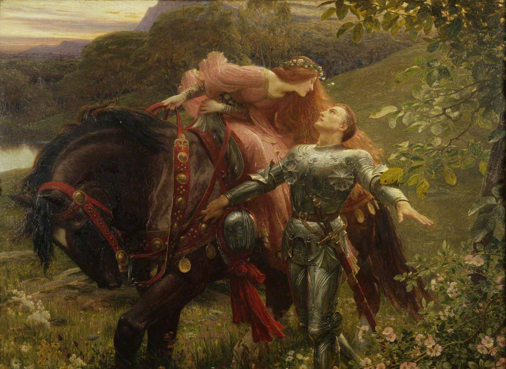
La Belle Dame sans Merci · Frank Dicksee, 1901 -
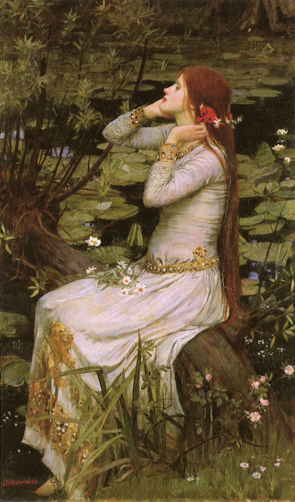
Ophelia · John William Waterhouse, 1894 -
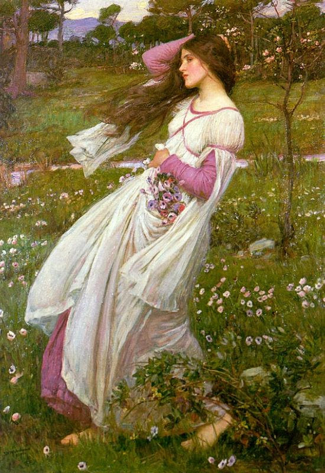
Windflowers · John William Waterhouse, 1903 -
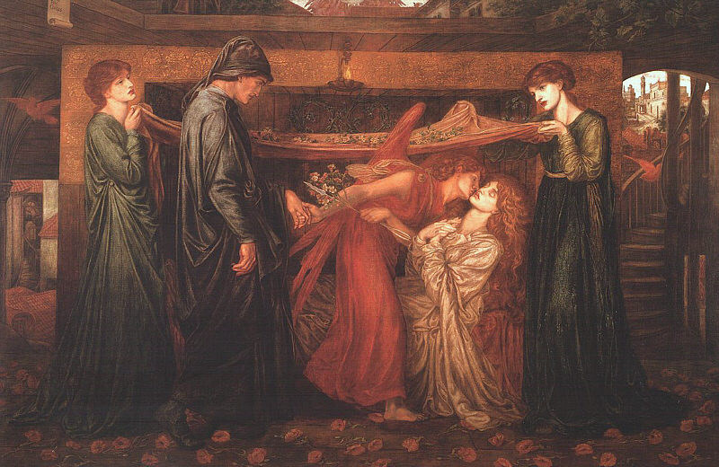
Dante's Dream at the Time of the Death of Beatrice · Dante Gabriel Rossetti, 1871 -
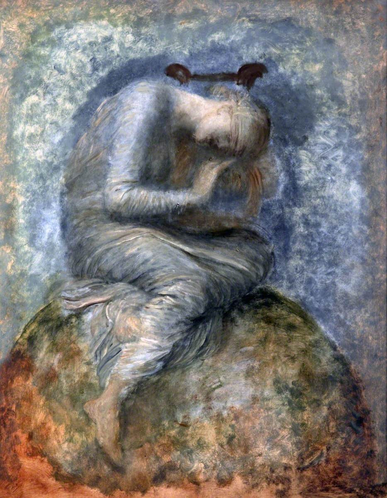
Hope · George Frederic Watts, about 1877–1886 -
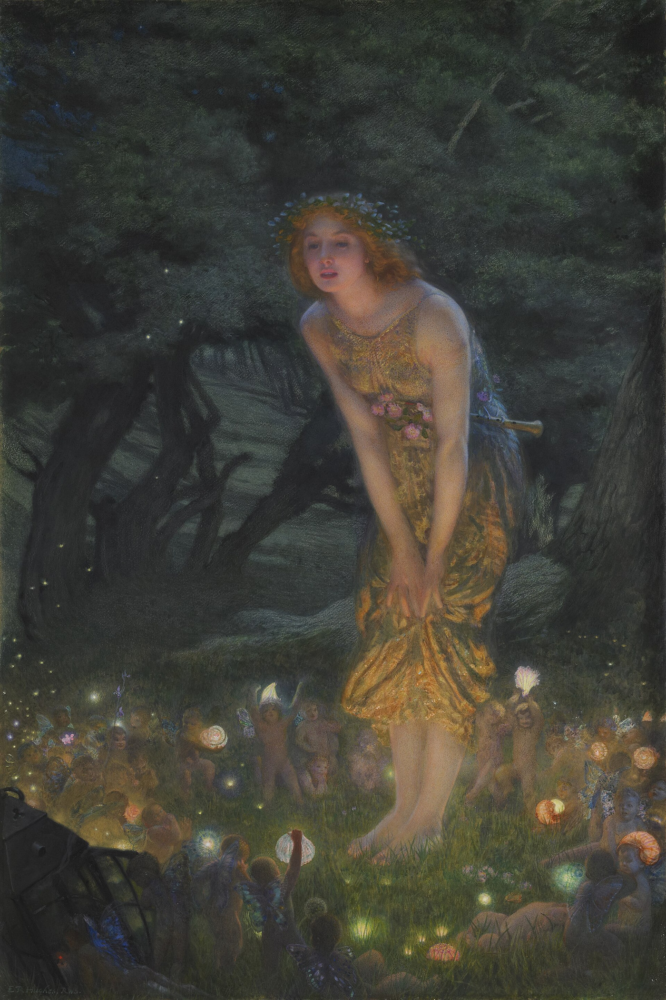
Midsummer Eve · Edward Robert Hughes, 1908 -
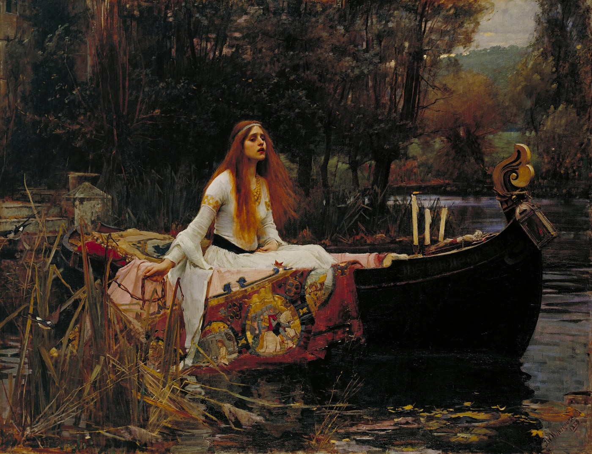
The Lady of Shalott · John William Waterhouse, 1888 -
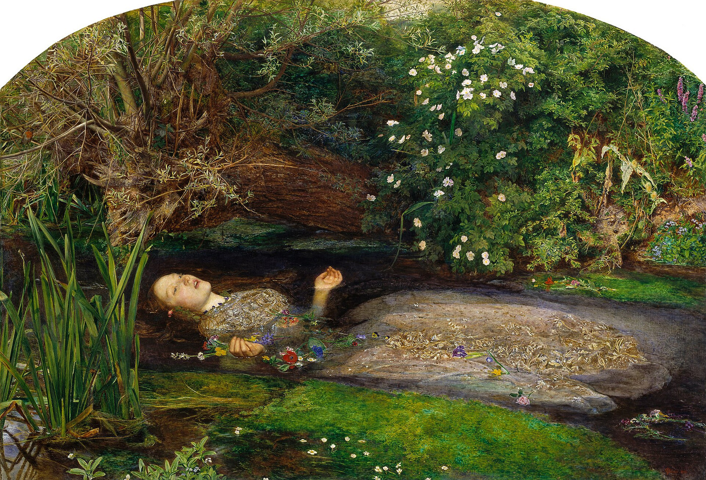
Ophelia · John Everett Millais, about 1851 -
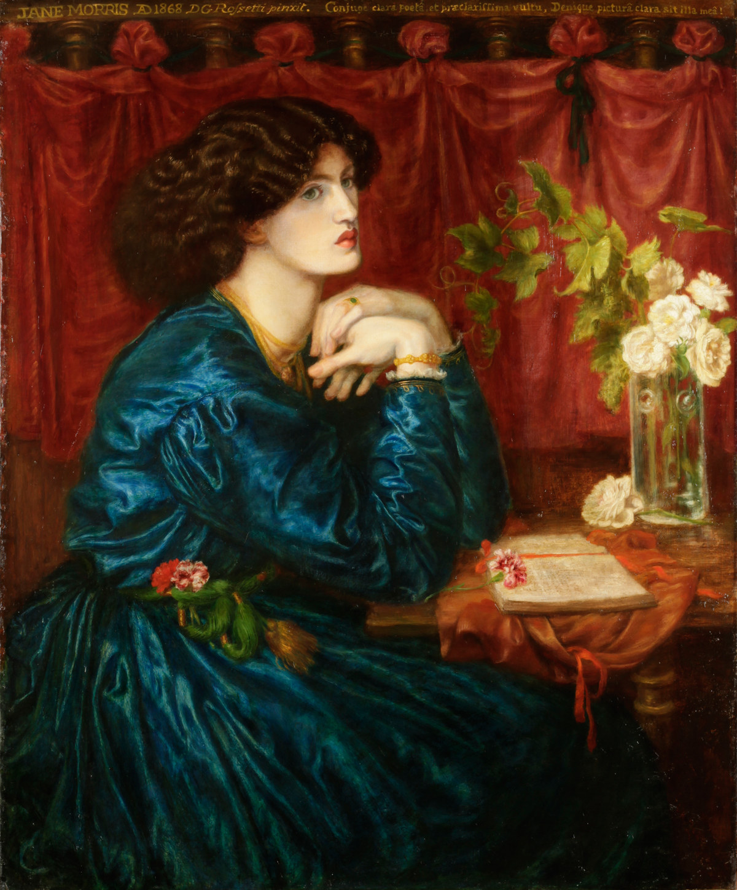
Jane Morris (The Blue Silk Dress) · Dante Gabriel Rossetti, 1868 -
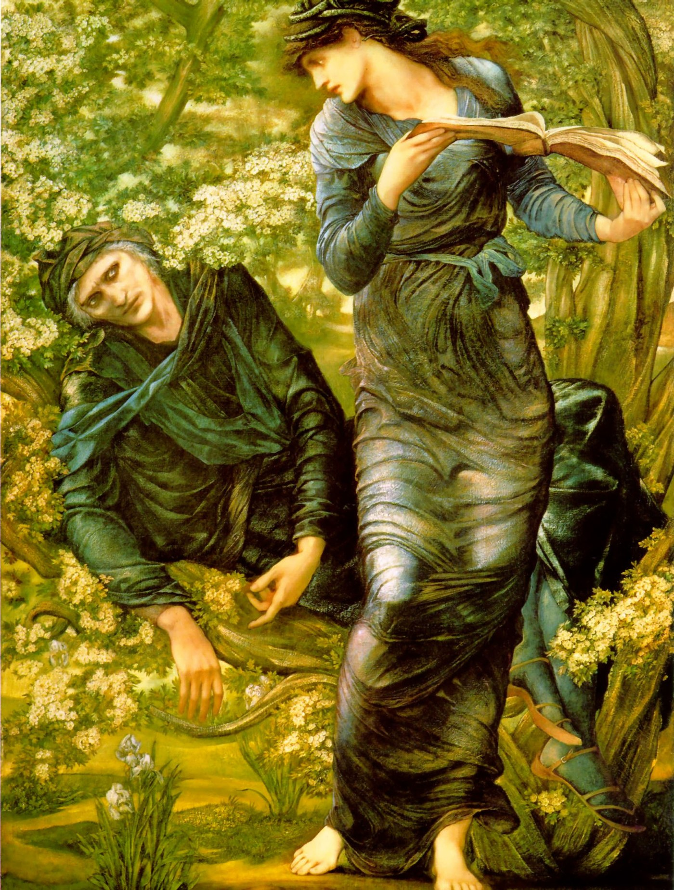
The Beguiling of Merlin · Edward Burne-Jones, 1874 -
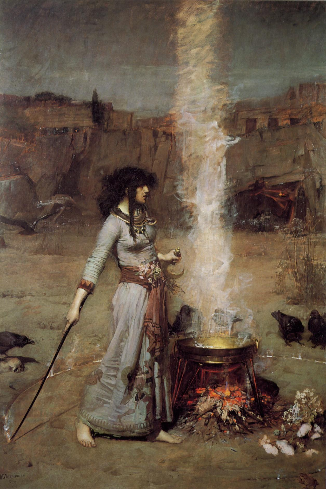
The Magic Circle · John William Waterhouse, 1886 -
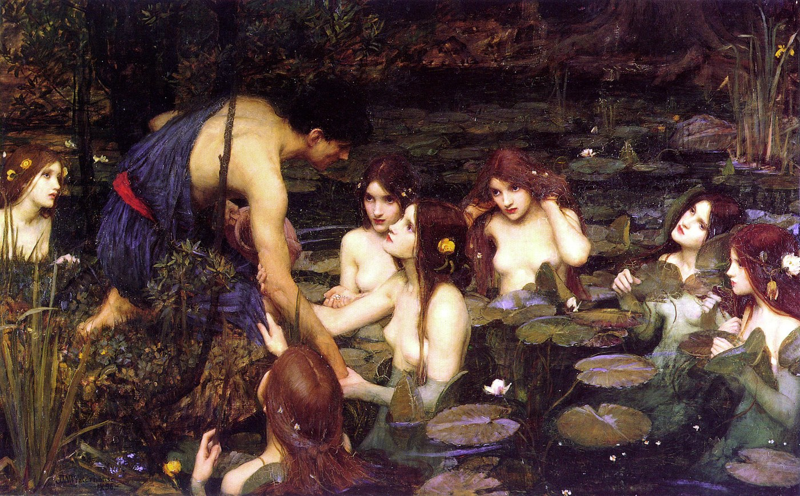
Hylas and the Nymphs · John William Waterhouse, 1896 -
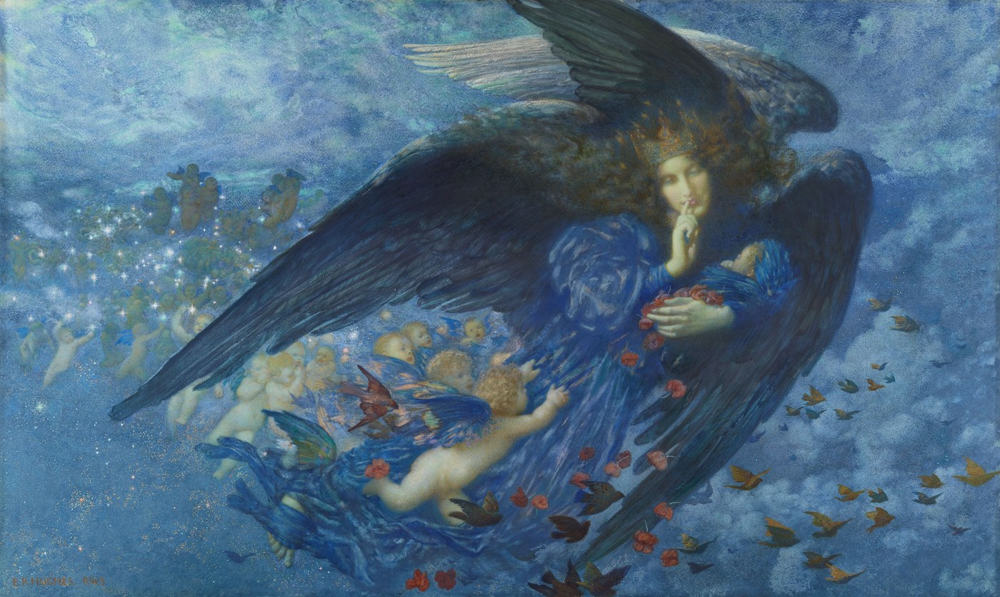
Night with her Train of Stars · Edward Robert Hughes, 1912 -
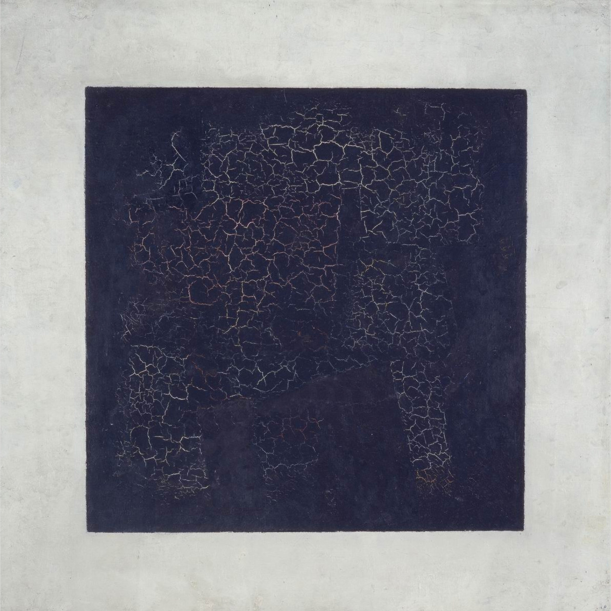
Black Square · Kazimir Malevich, 1915 -
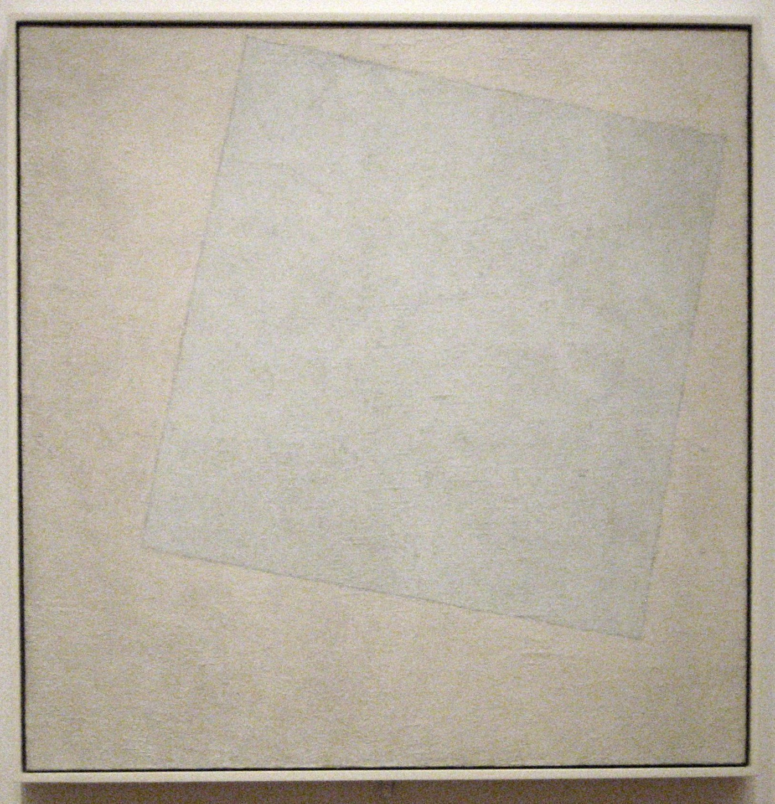
Suprematist Composition: White on White · Kazimir Malevich, 1918
Each scan is the one the liner notes name, with the painter, the title and the year read off its own record.
The Glimmer Window
There is a window at the far end of the room that does not look out onto the field outside. Nobody is entirely sure where it looks out onto instead. Open the shutters and see for yourself.


The Regulation Nook
Every good library has a regulation corner, even if nobody calls it that officially. Here is what is in mine.

Nature Notes
Flowers in my hair, boots by the stream, conkers on moss, mushrooms in the leaf litter and a tree turning gold.

flowers in my hair

boots by the stream

a tree turning gold

conkers on moss

mushrooms in the leaf litter

mushrooms in the leaf litter


mushrooms in the leaf litter


All photographs by Helen Edgar. The mushrooms are here for how they look, and nothing on this page says what kind they are.
Who Else Lives Here
The library is a shared arrangement. Currently in residence:
the cats
Harry, Zara, Ziggy and Tiggy
a small clowder, all convinced the shelves belong to them
open to see the photographsclose the photographs
Cats Coven
Harry, Zara, Ziggy and Tiggy, at home on the cat tree, out in the catio, and asleep wherever is softest.


the dog
Benji
has strong opinions about the doorbell
open to see the photographsclose the photographs
Dog’s Den
Benji, asleep on the cushions, by the fire, and out in the woods.


the hamster
Gibbles
runs the night shift and answers to nobody
open to see the photographsclose the photographs
Hamster Haven
Gibbles, on the night shift in his bowl and in the shavings.


Pebbles by the door
Penguins bring each other pebbles, and so do we: a small thing somebody found and thought somebody else would like, given on nobody’s clock. There is a log basket here of things Helen has put out for anybody to take, and a bowl for leaving one of your own. It was Helen’s own idea, the day she went to the Solarpunk Hermitage to watch a film; what pebbling is, and whose word it is, is in our glossary and in the Arcade’s pebbling cabinet.
The log basket: pop one on the fire and warm yourself up!
-
The amethyst cave: Anya Gallaccio’s The Light Pours Out Of Me
Amethyst is a violet quartz, coloured by traces of iron, and the birthstone for February. It has long been held to be a calming stone, kept for peace of mind, clear thinking and restful sleep. Wishing you a magical glimmer day. A grotto lined with it at Jupiter Artland, near Edinburgh, on YouTube via Yoga & Healing Fairy, 0:30.
The bowl in the hollow stump: leave one
The bowl needs scripts to read it.
Leaving a pebble takes a username on the CB, which you join with an invite: get started or sign on at the Community Center, then come back. Taking one takes nothing.
- Anybody can see the bowl, and only people signed on to the CB can leave a pebble in it. A handle is whatever somebody typed, so a name in the bowl is not proof of who left it.
- A pebble goes seven days after it is left, and a full bowl lets its oldest go to make room. The base station can lift one out sooner, and so can we if you ask: what the bowls keep.
- A link shows its whole address, so what you read is where it goes.
- Nothing here is counted: not what was taken, not what was left, and not who came to the door. Leaving a pebble is the only footprint there is, and nobody has to leave one.
The Moon Spoon Pebbling Pot
My moon stone sits on the windowledge beside my moon spoon, pressed with flowers I gathered in the local woods. Through the window you can watch the video the moon spoon came from.
Moon Spoon is Vi Hart’s video, on her own Vimeo, 6:30, and the moon spoon is her idea: she says to make your own, or make them for each other, by hand and with love, which is how mine was made. Nothing plays until you press, and nothing of hers is kept here.
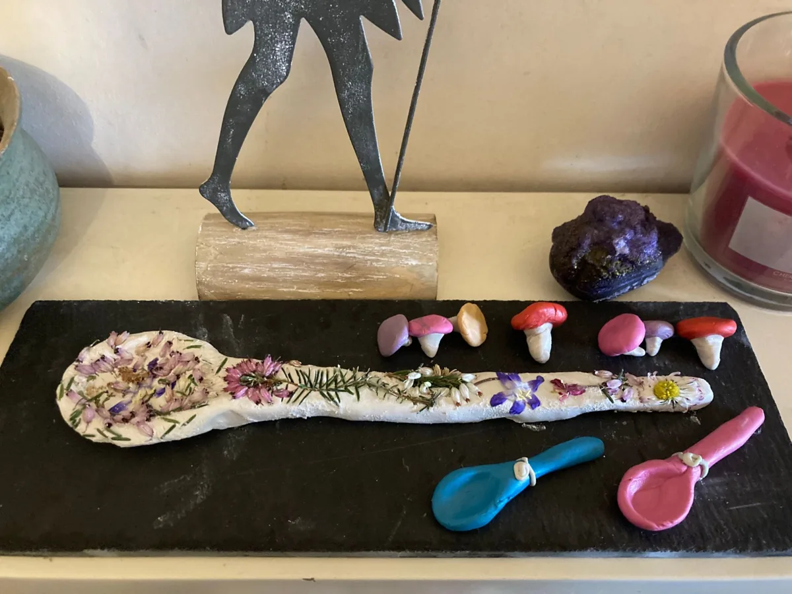
My moon spoon, and my moon stone behind it. 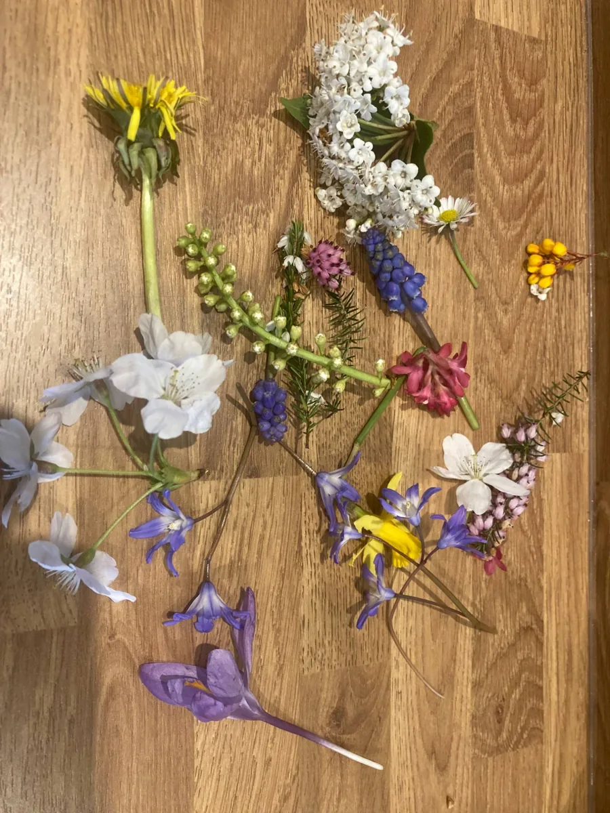
Flowers I gathered in the local woods. 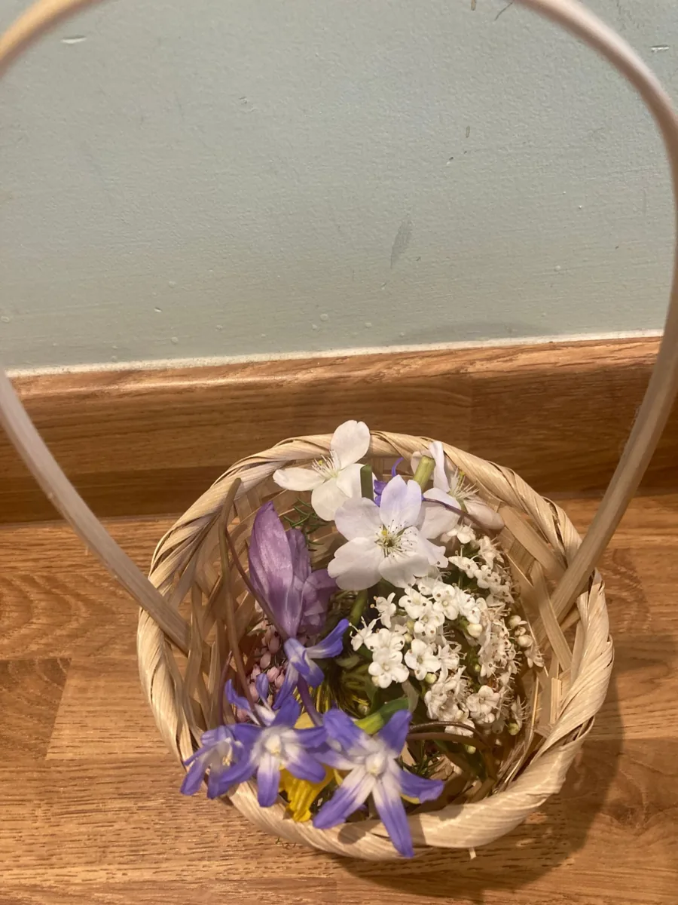
The same flowers, in a basket. 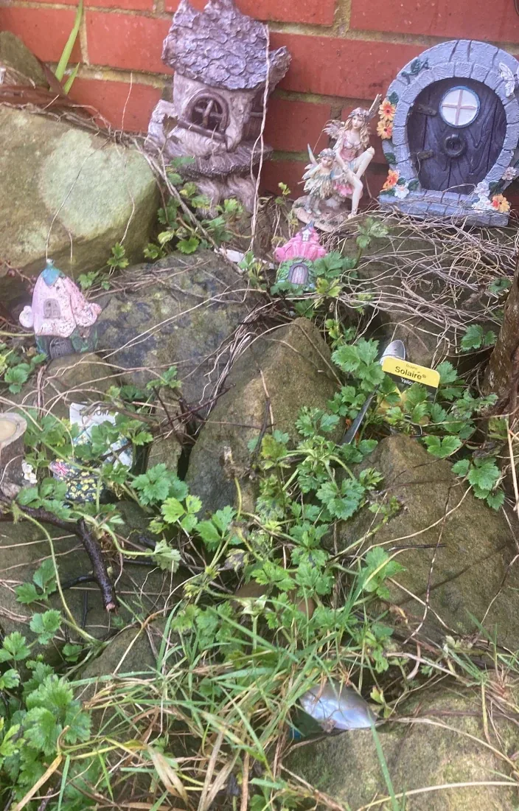
My faery garden, with a spoon hidden in the undergrowth.
Where To Find Me
The yurt itself sits on a small campsite off the main street, tucked into the woodlands with a stream tracing the edge of the trees. Follow the fairy lights from the treeline and you will find the door.
The neighbours on the campgrounds, from the pond, down a pebble path or up the cable car: David Gray-Hammond’s Emergent Future Worlds Meets Mountain Man at the summit, Jess’s Bough House at pitch 05 and Ryan Boren’s Solarpunk Hermitage at pitch 03. Go and visit.
Out in the wider world, my writing lives in two places. Autistic Realms is where I share grounded, practical support for families, educators, and those navigating Autistic ways of being. More Realms is where things are looser, weirder, more speculative.
Job marker — a candle stub burnt most of the way down
You have found a job marker. The Adventurer’s Guild is a shopfront on the street, and it posts jobs that send you round these rooms. Take the code below to its board and that job is done. Nothing here is scored, nothing expires, and one is a perfectly good number of jobs to do.
The job: A candle stub on the windowsill
Quest code: TALLOW